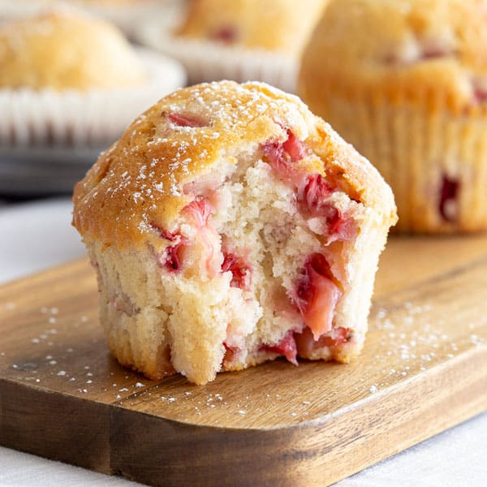

Fresh Strawberry Muffins

Oven-fresh muffins baked with farm-fresh strawberries
Get a taste of summer with local farm-picked strawberries and homemade baked goodness Source
Ingredients
- 3/4 cup white sugar
- 1/2 cup butter, softened
- 1 egg
- 2 cups all-purpose flour
- 2 teaspoons baking powder
- 1/2 teaspoon salt
- 1/2 cup milk
- 1/2 teaspoon vanilla extract
- 1 1/2 cups chopped strawberries
- 3 teaspoons white sugar
- 1/2 teaspoon ground cinnamon
Steps
-
Preheat the oven to 400 degrees F (200 degrees C). Grease a 12-cup muffin tin or line with paper liners
-
Beat 3/4 cup sugar and butter together in a mixing bowl using an electric mixer until creamy. Add egg and mix well.
-
Sift flour, baking powder, and salt together in a small bowl. Add flour mixture and milk alternately to butter mixture until combined. Stir in vanillaextract. Gently stir in strawberries.
-
Spoon batter into the prepared muffin cups. Combine 3 teaspoons sugar and cinnamon in a small bowl and sprinkle over tops of muffins.
-
Bake in the preheated oven until a toothpick inserted into the center of a muffin comes out clean, 20 to 25 minutes.
Return to main page